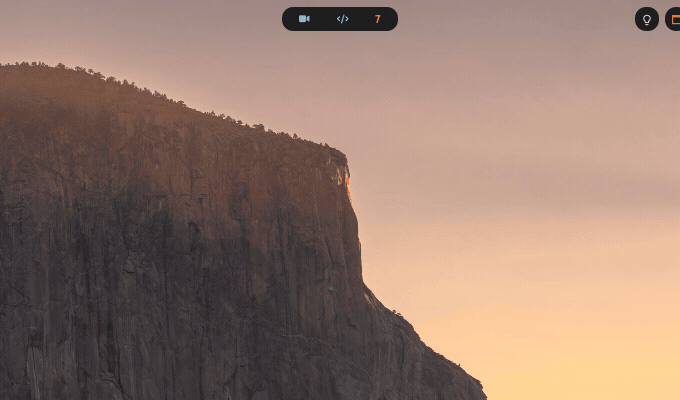

The tools you get
About forty-five small commands come with this desktop. These are the ones you will use.
All of them at a glance
| Tool | What it is for | How to open it |
|---|---|---|
| ati-update | Bring this desktop up to date. Run it now and then | Type ati-update |
| The shelf | A panel you drag files into now and drag out later | Alt+Shift+d |
| The updater | Update or install software with checkboxes, no typing | Click the updates count in the bar |
| Passwords | A pop-up list of your saved passwords | Super+P then p |
| Phone mirroring | Your Android phone's screen on the computer, controllable | Super+Shift+F6 |
| Dictation | Speak, and the words are typed | F8 or F9 |
| Clipboard history | Everything you copied recently, with picture previews | Alt+v |
| Screenshots | Drag a box, straight to the clipboard | |
| Screen recording | Video, audio, webcam or a gif | Super+P then r |
| PDF toolkit | Convert, merge, split, compress, rotate, password, OCR — offline | Super+P then v |
| Translation | Translate whatever text you have selected | Super+P then e |
| Drawing on screen | Scribble over anything, for explaining on calls | Super+Shift+w |
Keeping this desktop up to date
Do this one now and then. The USB stick is a snapshot of the day it was built. The desktop itself is improved most days. You do not need a new stick — one command brings your machine level with the latest version:
ati-updateIt shows you what changed and asks before doing anything. Your windows survive.
Your own changes are never thrown away. If you have edited any of the settings files, it stops and tells you rather than overwriting them.
| Variation | What it does |
|---|---|
ati-update --check | Say what would happen, change nothing |
ati-update --yes | Do not ask. For running it automatically |
ati-update --stash | Set your own edits aside, update, then put them back |
ati-update --no-restart | Update, but leave the desktop restart until later |
What it decides for itself, and why it tests the new settings first
It works out what a given update actually needs — new settings linked into place, newly required programs installed, the boot screen regenerated, the desktop restarted — and does only those.
--stash sets your own edits aside and restores them afterwards. If your edit
and the update touch the same lines, it stops there too, tells you which files, and does
not restart the desktop.
A mistake in the window manager's settings file does not produce an error. The window manager quietly loads its own plain built-in settings instead, so the failure looks like your desktop turning into a stranger's, with nothing on screen explaining why.
So the new settings are loaded for real, in the background, before anything is applied. If they do not load, your machine is put back exactly as it was and the error is printed. A bad update cannot leave you staring at a desktop you do not recognise.
The shelf
A panel slides down from the top. Drag files, text, links or images into it; they stay. Later, in another program, drag them back out.
It solves "I want to attach this file to that email, but they are on different workspaces".

Using it
| Do this | Result |
|---|---|
| Alt+Shift+d | Show or hide it |
| Shake the mouse while dragging a file | It comes to you. Any direction. This is the good one |
| Drop something in | It is added. Links are recognised automatically |
| Drag an item out | Paste it into any program |
| Ctrl+V | Paste from the clipboard — text, files, or an image you copied from a web page |
| Ctrl+F | Search what is in there |
| Enter | Open the selected item |
| Del | Remove it |
| Ctrl+A, or drag a box on empty space | Select several at once |
| Right-click | A menu |
It hides 8 seconds after the mouse leaves, unless a menu or dialog is open.
Shaking only works while you are really dragging a file. Selecting text or dragging a selection box will not trigger it. Otherwise it would pop up constantly.
Where it stores things, and what it costs
The list lives in ~/.cache/qdrop.json. An image copied from a web page is
raw pixels rather than a file, so it is saved into ~/.cache/qdrop-images/ and
added as a normal entry.
From a terminal:
qdrop.py --show | --hide | --toggle | --add-text TXT | --reload | --statusIdle cost: 0% CPU, about 90 MB of memory for both parts together.
Updating software without a terminal
Update and install programs by ticking boxes. Click the updates count in the bar. A window opens with two tabs.
The Updates tab
Everything with a new version. Each row: a checkbox, a badge saying where it comes from, the old and new version numbers.
Two buttons at the bottom:
- Update selected — only the ones you ticked.
- Full upgrade — everything. Use this one normally. It snapshots your system first, so a bad update can be undone.
Tick Run in background and no terminal appears. You get a notification when it finishes either way.
The Install tab
Type a name. Results are sorted so the one you meant is at the top, with a marker on anything you already have. Tick, then Install selected.
Why the list appears instantly
It shows a saved copy the moment you open the window and checks for a newer one in the background. Without that, opening the window meant waiting for a network round trip, and hanging entirely with no connection.
Passwords
Your passwords in a pop-up list, on a keyboard shortcut. Nothing leaves your computer.
Create the account first — two minutes, once. Then press Super+P, let go, press p. Type to filter.
| Press | Result |
|---|---|
| Enter | Copy the password. Your clipboard is wiped 30 seconds later |
| Alt+u | Copy the username |
| Alt+t | Copy the two-factor code |
| Alt+o | Open that site in your browser |
| Alt+a | Type the password into the window you came from. It never touches the clipboard |
| Alt+n | New entry — it can generate a 24-character password for you |
| Alt+e | Edit an entry |
| Alt+x | Delete an entry |
| Alt+s | Sync now |
The hint line shows the three you reach for. All nine work.
In your web browser too
Install the Bitwarden extension from your browser's store.
-
Open it and, before you log in, click the ⚙ cog at the top left → Self-hosted environment.
-
Put
https://127.0.0.1:8222in the server box and save.The s in
httpsmatters. Log in with your email and master password.
Nothing else needed. Your browser already trusts the certificate.
On your phone
The password server listens only to your own computer, on purpose. Do not open port 8222 to your network or the internet.
To reach it from a phone, use Tailscale — a free private network between your own devices.
Why a phone needs Tailscale and cannot just connect
Two things block the obvious approach:
- The Bitwarden app refuses plain unencrypted connections outright, with no exception for your own home network.
- Modern Android does not trust certificates you install yourself, so putting your computer's certificate on the phone still fails. This is the step that eats an evening.
Tailscale solves both: it is encrypted, and it can issue a certificate phones already trust.
-
On the computer, run
sudo tailscale upand follow the link it prints to sign in. -
In the Tailscale admin website, turn on MagicDNS and HTTPS Certificates.
Without both, the next step fails with "your Tailscale account does not support getting TLS certs".
-
Back on the computer:
./wizard.sh --yes --only=vaultwarden-phone -
On the phone: install Tailscale and sign in with the same account. Install Bitwarden. Before logging in, tap ⚙ → Self-hosted environment and enter
https://<yourcomputer>.<yournetwork>.ts.net:8222
A laptop is not a server. With the lid shut your phone can still read passwords it already downloaded. It cannot sync or save new ones until the laptop is back. If that matters, move the password server to something that stays on, such as a Raspberry Pi or a small rented server, and point the tools at it. Nothing else changes.
What is actually running
Vaultwarden, an independent implementation of the Bitwarden server, running on your own
computer at 127.0.0.1:8222. It speaks the same protocol as the official Bitwarden
apps. That is the whole point: no bespoke phone app to trust.
The phone bridge publishes a proxy rather than moving the server. One program can listen on
only one address, so moving it would take 127.0.0.1 away and break both the
pop-up list and the browser extension. The proxy handles encryption and forwards to the local
server, so nothing is exposed to your home network.
Your phone on the screen
Your Android phone in a window, controlled with your mouse and keyboard. Sound comes out of the computer's speakers.
The first time
-
On the phone, turn on Wireless debugging: Settings → Developer options → Wireless debugging.
This survives restarts, so it really is a one-time thing.
-
On the computer, press Super+Shift+F6.
A window opens with a QR code and a text box.
-
Either scan the QR code with the phone (Wireless debugging → Pair device with QR code), or tap Pair device with pairing code and type the 6 digits into the text box. Whichever finishes first wins.
After that the shortcut goes straight to the mirror. Pressing it again brings that window to the front rather than starting a second one.
Controls
| Do this | Result |
|---|---|
| Left / right / middle click | Tap / back / home |
| Alt+S | App switcher |
| Alt+F | Fullscreen |
| Alt+O | Turn the phone's own screen back on — it starts dark to save battery |
| Alt+Q | Quit |
| Drag a file onto the window | It is copied to the phone's Download folder |
| Drag an APK onto the window | It is installed |
Turned on the optional Caps-Lock-as-Alt setting? Use Caps instead. On a normal install your real Alt key is correct.
Making the picture better
Plug in a USB cable. Not a marginal improvement — Wi-Fi is the bottleneck, not the computer.
To make the window bigger:
PHONE_SIZE=100 phone_screenDefault 92, meaning 92% of usable screen height. A phone held upright cannot go wider without being taller than your screen, so 100 is the ceiling.
How much difference the cable makes
Measured here, the round trip to the phone over Wi-Fi averaged 53 ms, worse than two whole frames before anything is encoded. A cable raises the quality ceiling substantially.
Why this needs a special tool at all
On Arch the standard Android tool is built without the ability to find a phone on the network, so every guide saying "it just finds it" is wrong here. The address and port are both random, and the port changes whenever the phone restarts. Doing it by hand is a chore every session, not a one-off.
The script listens for the announcement the phone broadcasts and hands the connection details over. That is the whole trick.
It also keeps the window on screen when you rotate the phone. The mirror resizes from its top-left corner, which walks a right-anchored window off the edge. A watcher checks once a second and nudges it back.
Dictation
Speak instead of typing. It runs on your own computer; nothing is sent anywhere.
| Press | What happens |
|---|---|
| F8 | Live. Start talking. Each phrase is typed the moment you pause. Press F8 again to stop |
| F9 | All at once. Start talking, press F9 again when you are done, and the whole thing is typed out |
F8 for a chat message. F9 for a paragraph you want to think through first.
Transcribing nonsense? Your microphone volume was probably reset to a distorting level. A background service fixes that, installed as part of a normal install. See Troubleshooting.
Notes and to-dos
| Press | What you get |
|---|---|
| Super+Shift+s | Your main notes file, in an editor. Press again to hide it |
| Alt+p, or the clock | Today's and this week's plans and to-dos |
| Super+P then t | A to-do manager |
| Super+P then o | Store and copy short notes |
With note syncing set up, your to-do list also appears in the Simplenote phone app. Saving uploads. Opening the window downloads.
Editing in both places is safe. Change the list on both and it will not guess a winner. You get a second file with a timestamp in its name holding the phone's version, and you merge by hand.
The menus behind Super+P
All searchable lists. Type to filter, arrows to move, Enter to choose.
| Press | What it does |
|---|---|
| Super+P k | Close a frozen program. Shows what is running with its window title, so you can tell which browser tab is the problem |
| Super+P l | Screen brightness |
| Super+P e | Translate the selected text, with a dictionary table |
| Super+P s | Spell and grammar check a word or a sentence |
| Super+P a | Build an Anki flashcard and send it to Anki |
| Super+P i | Screenshot, then annotate it before saving |
| Super+P r | Record video, audio, webcam or a gif |
| Super+P v | The PDF toolkit. Office documents and images to PDF and back, merge, split, extract a page range, delete or rotate pages, compress, add or remove a password, watermark, page numbers, repair, and OCR to make a scan selectable. All of it on your own machine — nothing is uploaded, and nothing is watermarked on the way out |
| Super+P d | Find and open one of your documents |
| Super+P f | Browse and edit settings files |
| Super+P m | Read a manual page |
| Super+P z | Your saved links, with previews |
| Super+P y | YouTube menu |
| Super+P h | Every one of these menus, in one list |
The translation, spell check and flashcard tools can use an AI service for extra suggestions. Without an AI key they still work, with one section less.
Updating safely
Use the updater window, or type:
dcli updateWhy not a plain pacman -Syu
Three safety nets sit around the proper command:
- Refused if your disk is nearly full. Applies to any tool, so it cannot be worked around by accident.
- Refused if your safety snapshots sit somewhere that would not survive the problem they are for.
- After an update, anything that broke gets the repair command put straight on your clipboard.
If an update breaks something
Work down the list. Each step is a bigger hammer than the last.
Put the broken piece of software back to its previous version.
Restart, and choose the fallback kernel from the startup menu.
Restart, and choose the rescue entry — the same fallback kernel, but with every driver loaded.
Start from an Arch USB stick and repair from there.
Restore a snapshot.
Steps 2 and 3 exist because this install adds them. The fallback kernel package alone gives you no way to boot it.
A few more
| Type this | To do this |
|---|---|
letsgo or startx | Start the desktop from the text screen |
theme-apply gruvbox | Change the colour theme |
ui-scale-toggle | Change the size of everything |
boot-splash preview | See the startup screen without restarting |
ati-update | Get the latest version of this desktop. More about it |
hintium --doctor | Check why the mouse-free clicking modes are not working |
ati-qtile-keys | Print every keyboard shortcut |
fc-cache -fv | Notice newly installed fonts |
qtile cmd-obj -o cmd -f reload_config | Reload settings without a full restart |
All bundled commands work from anywhere. ls /usr/local/bin shows the
complete set.